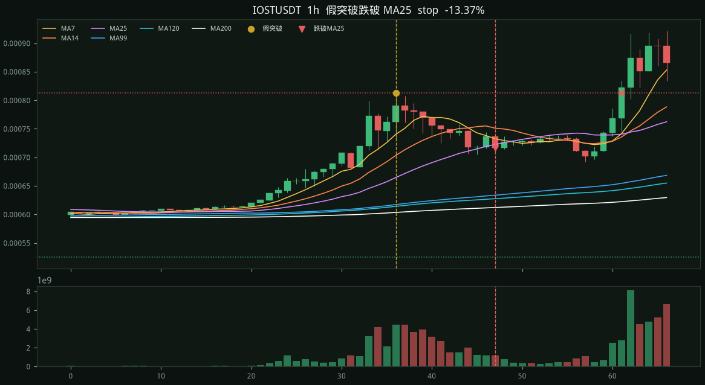
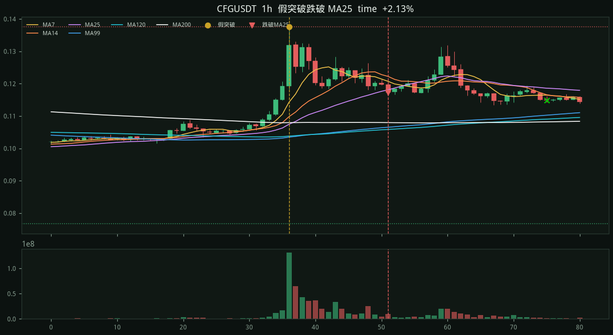

#1 · MARSCOINUSDT09-06 13:00 → 09-07 13:00
+24.09%
entry 0.22526 stop 0.26971 target 0.13636 exit 0.171 time +24.09% fwd +4h +5.02% +8h +17.78% +24h +24.09%

對齊 2026-09-29 HBAR 箱體假突破：高點離 MA25 15～40%，
從箱體再高出 ≥ 22%，回落 8～18% 後，
隔 6～18 根、右肩連 4 根壓在 MA14 下（近 2 根上影不過 MA14 +0.5%、MA14 下彎、MA7 死叉 MA14 ≥ 1%），離 MA99 ≥ 7% 且跌破量 ≥ 0.35× 均量，陰線第一次跌破 MA25（離均線 ≤ 2.5%）才算。
收盤空；停在假突破高、目標 2R、或 24 根時間停。同標的重疊不重做。加總％是各筆相加。
掃 282 檔 · 原始訊號 5 · 進場 5 · 標的 5
· 出場：2R 0 · 停損 1
· 時間 4 · 未平 0
· 收盤後 +4h +1.57% · +8h +2.40%
· +24h +3.33%
entry 0.22526 stop 0.26971 target 0.13636 exit 0.171 time +24.09% fwd +4h +5.02% +8h +17.78% +24h +24.09%
entry 0.0007167 stop 0.0008125 target 0.0005251 exit 0.0008125 stop -13.37% fwd +4h -1.38% +8h -2.19% +24h -23.72%

entry 0.1173 stop 0.1376 target 0.0767 exit 0.1148 time +2.13% fwd +4h +0.00% +8h -9.46% +24h +2.13%

entry 0.03393 stop 0.0412 target 0.01939 exit 0.03289 time +3.07% fwd +4h +3.68% +8h +2.92% +24h +3.07%

entry 0.11766 stop 0.13099 target 0.091 exit 0.1046 time +11.10% fwd +4h +0.54% +8h +2.94% +24h +11.10%